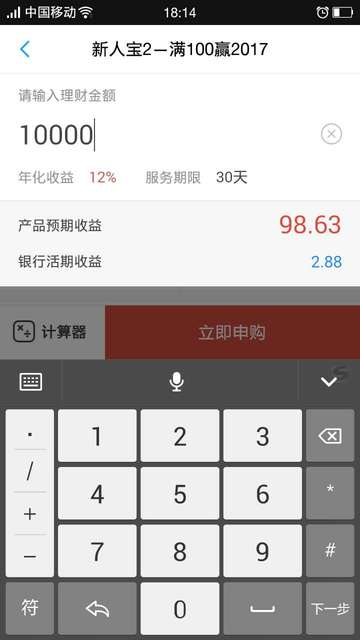

工作久了,身边有一些朋友就有了一些闲钱,于是他们一般会将这些闲钱放在一些理财的产品上。自从支付宝的余额宝出现之后,这类的产品就层出不穷,看的都眼花缭乱。
本来打算写一篇如何通过统计机器学习对理财产品进行预测的文章,后来想了想还是先从基础说起吧,免得人家看的云里雾里的。
一般的理财产品在你购买之前都会标注其年收益率,比如类似如下的1个理财产品:

可以看到,该理财产品的年收益率为12%。假设你手头上有1W块,定期1个月,那么1个月后你就可以获取到98.63元。
实话说,对于理财产品来说,无论是年化收益率还是年收益率,其实都是1个估计值,它是对未来一段时间收益的估计。比如,这里的收益98.63是怎么计算出来的呢?
首先,我们可以看到其年化收益率为12%,然后我们将其平摊到1年中去,那么我们有:
12% × 30 / 365 ≈ 0.9863%
在这里,我们通过其年化收益率12%,乘以30天,然后除以365天得到收益率为0.9863%,之后我们将其乘以1W于是便得到了98.63这个数字。
由于,未来是不可预测的,虽然理财产品标明的年化收益率为12%,但是实际上可能1个月后我们1W元的收益总金额为100元,此时我们有:
100/10000 × 365 / 30 ≈ 12.16%
可以看到此时计算得到的比例比标明的还要高。当然,一般情况下是持平的,也有可能略低于标明的比例。这就是为什么我们需要通过统计的方式来进行预测的原因。
由于我们1个月的收益为98.63元,那么如果每个月的年化收益率都是12%的话,那么1年后我们的总收益为:
98.63*12 = 1183.56
而如果是1个理财产品,定期为1年,同样的年收益率,那么其结果预计是:
12% * 10000 = 1200
可以看到,通过单个月的方式在1年中的收益会略比1年的低一些,有0.137%的损失。
说到这里,我们可以发现,只有在年化收益率持续不变的情况下,才会等于年收益率。但是由于精度的问题,我们会发现即使年化收益率与年收益率一致,也会比年收益率的情况略小一些。
同样的,我们会看到投资周期为7天,15天的情况,对于这种情况的计算,我们只需要获取到其年化收益率,然后将数字30替换为7或15,那么我们就可以计算出对应时限的总收益金额。
当然,为了资金的灵活性,我们不一定会都选择定期1年的做法。而更多的方式是组合短、中、长期的方式来达到最大的收益,关于这方面,预计会在后续日子中写1篇文章来进行说明。